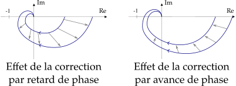

Soit \(f\) une fonction du temps telle que \(\forall t < 0, f(t)=0\). La transformée de Laplace de \(f\) est \[ \mathcal{L}(f):p \mapsto \int_{0^-}^\infty f(t)\,e^{-pt}\,\mathrm{d}t \]
Soit \(f\) une fonction du temps. La transformée de Fourier (hors programme) de \(f\) est \[ \mathcal{F}(f):\omega \mapsto \frac{1}{\sqrt{2\pi}} \int_{-\infty}^{+\infty} f(t)\,\mathrm{e}^{-{\rm{j}}\omega t}\,\mathrm{d}t \]
Soit \(s\) une fonction discrète du temps. La transformée en Z (hors programme) de \(f\) est \[ \mathcal{Z}(s): z \mapsto \sum_{n=-\infty}^{+\infty} s(n)\,z^{-n} \]
Dans les pays anglo-saxons, \(p\) se note \(s\).
\(u\) est la fonction d’Heaviside.
\[\underset{t \rightarrow +\infty}{\mathrm{lim}} ~ f(t) = \underset{p \rightarrow 0}{\mathrm{lim}} ~ p\,F(p)\] (valeur initiale : \(p \rightarrow +\infty\))
\[\frac{\mathrm{d}f(t)}{\mathrm{d}t}u(t) \underset{\mathcal{L}}{\longrightarrow} p\,F(p)-f(t=0^+)\]
\[\int_a^t f(x)\,u(x)\,\mathrm{d}x \underset{\mathcal{L}}{\longrightarrow} \frac{F(p)}{p}+\frac{1}{p} \int_a^0 f(x)\,\mathrm{d}x\]
\[f(t-\tau)\,u(t-\tau) \underset{\mathcal{L}}{\longrightarrow} e^{-\tau\,p}\,F(p)\]
\[f(a\,t)\,u(t) \underset{\mathcal{L}}{\longrightarrow} \frac{1}{a}\,F\left(\frac{p}{a}\right)\]
\[e^{-a\,t}\,f(t)\,u(t) \underset{\mathcal{L}}{\longrightarrow} F(p+a)\]
\[\delta (t) \underset{\mathcal{L}}{\longrightarrow} 1\]
\[\forall n\in\mathbb{N},\quad t^n\,u(t) \underset{\mathcal{L}}{\longrightarrow} \frac{n!}{p^{n+1}}\]
\[\sin(\omega t)\,u(t) \underset{\mathcal{L}}{\longrightarrow} \frac{\omega}{p^2+\omega^2}\] \[\cos(\omega t)\,u(t) \underset{\mathcal{L}}{\longrightarrow} \frac{p}{p^2+\omega^2}\]
Lors de la réponse d’un second ordre à un échelon, le \(k\)-ième dépassement vaut (pourcentage relatif à la consigne) \[ D_k = \exp \left({\frac{-k \xi \pi}{\sqrt{1-\xi^2}}}\right) \]
On cherche à identifier un second ordre avec la réponse temporelle à un échelon.
\[ H(p)=\frac{K}{1+\frac{2\xi}{\omega_0}p+\frac{p^2}{\omega_0^2}} \]
Déjà on a le gain \(K\) en régime établi (rapport de la sortie sur l’entrée).
On cherche ensuite le coefficient d’amortissement \(\xi\). On mesure le 1er dépassement \(D\) et on utilise cette formule \[ D = \exp \left({\frac{-\xi \pi}{\sqrt{1-\xi^2}}}\right) \]
On cherche enfin la pulsation propre du système \(\omega_0\). Pour cela on mesure la pseudo période \(T\) et on utilise \[ \frac{2\pi}{T} = \omega = \omega_0 \sqrt{1-\xi^2} \]
Une fonction de transfert de classe \(\alpha\) s’écrit canoniquement \[G(p)=\frac{K}{p^\alpha} \times \frac{1+b_1 p+...}{1+a_1 p+...}\]
Soit \(\alpha\) la classe généralisée de \(H_{BO}(p)\).
Pour \(\alpha = 0\), \(\epsilon_{statique} = \frac{X_0}{1+K_{BO}}\)
Pour \(\alpha = 1\), \(\epsilon_{statique} = 0\) et \(\epsilon_{trainage} = \frac{V}{K_{BO}}\)
Pour \(\alpha = 2\), \(\epsilon_{statique} = \epsilon_{trainage} = 0\) et \(\epsilon_{acceleration} = \frac{a}{K_{BO}}\)
Donc l’erreur en régime permanent diminue si le gain \(K_{BO}\) ou la classe \(\alpha\) augmentent.
Démonstration. On applique le théorème de la valeur final sur le signal d’erreur \(\epsilon(p)\) (après le comparateur) avec en entrée un échelon, une rampe puis une parabole.
L’erreur due à une perturbation en régulation diminue si le gain ou le nombre d’intégrateur en amont de cette perturbation augmentent.
Démonstration. Comme la démonstration précédente mais on considère la consigne nulle et une perturbation.
Plus la bande passante d’un système bouclé est grande, plus le système est précis en régime sinusoïdal sur une grande plage de fréquence.
Démonstration. L’expression du gain de la BF avec \(H_{BO}(p)\) montre qu’il existe une pulsation de coupure que l’on souhaite maximiser pour être précis en hautes fréquences.
Plus la bande passante des composants en amont de la perturbation est grande, plus le système est précis vis-à-vis d’une perturbation harmonique de haute fréquence.
Démonstration. Comme la démonstration précédente mais on considère la consigne nulle et une perturbation.
Les modèles utilisés sont des approximations linéaires autour de points de fonctionnement. Pour rester réaliste il faut éviter les phénomènes non linéaires tels que
Un système stable est un système qui revient vers sa position d’équilibre après perturbation.
Un système stable est un système qui admet une fonction de transfert \(H(p)\) telle que \[ \forall \text{pôles~}p_i\text{~de~}H(p),\quad\mathrm{Re}(p_i) < 0 \]
Démonstration. Se ramener à la forme des pôles de la fonction de transfert : \(p_i = -a_i \pm j\Omega_i\). La décomposition en élément simple mène au résultat.
Une seule étude de stabilité est nécessaire qu’il y ait perturbation ou pas.
Démonstration. Le dénominateur de la fonction de transfert en régulation et en poursuite est le même.
Donc un système est stable en boucle fermée si seulement si \(1+H_{BO}(p)=0\) n’a que des solutions à partie réelle \(<0\).
Démonstration. Les racines de \(1+H_{BO}\) sont les pôles de \(H_{BF}\).
Ce critère ne marche pas sur un système comportant un retard. On considère un système de fonction de transfert \(H(p)\) de dénominateur \[ D(p) = a_n\,p^n+a_{n-1}\,p^{n-1}+...+a_1\,p+a_0 \]
Le système est stable si seulement si
Le nombre de racine à partie réelle strictement positive est donné par le nombre de changement de signe dans la première colonne.
Si un point \(M\) d’affixe \(p\) décrit dans le plan complexe un contour fermé \((C)\) dans le sens inverse trigonométrique, à l’intérieur duquel se trouve \(P\) pôles et \(Z\) zéros d’une fonction \(F(p)\), alors l’image de \((C)\) par \(F(p)\) décrit une courbe \((\Gamma)\) qui fait autour de l’origine \((Z-P)\) tours.
Démonstration. La variation de l’argument de \(F(p)\) pour un tour de \(M\) sur \((C)\) est \((-2\pi) \times (Z-P)\).
Un système bouclé est stable en boucle fermée si seulement si le lieu de Nyquist de \(H_{BO}\) complété et parcouru dans le sens des \(\omega\) croissants
Démonstration. Par la condition de stabilité ainsi que le théorème de Cauchy en considérant la courbe englobant la partie réelle positive du plan complexe. Le point critique est en \(-1\) car on se rapporte à \(1+H_{BO}\).
Un système bouclé est stable en boucle fermée si et seulement si le point critique \(-1\) reste à gauche en parcourant le lieu de Nyquist de \(H_{BO}\) dans le sens des \(\omega\) croissants.
Valable que si \(H_{BO}\) n’a pas de pôle à partie réelle positive.
Démonstration. Cas particulier du critère de Nyquist.
Soit \(\omega_c\) la pulsation de coupure, i.e. \(|H_{BO}(j\,\omega_c)|=1\). Alors la marge de phase est \[M_\varphi = \varphi(\omega_c) - (-180^\circ)\]
Soit \(\omega_1\) tel que \(\varphi(\omega_1)=-180^\circ\). Alors la marge de gain est \[M_G = -20 \times \log|H_{BO}(\rm{j}\,\omega_1)|\]
En pratique, il y a stabilité pour \(M_\varphi \geq 45^\circ\) et \(M_G \geq 6\,\mathrm{dB}\).
Il y a résonance en \(\omega_r=\omega_0 \sqrt{1-2 \xi^2}\). Le facteur de résonance est \[Q = 20 \times \log \left( \frac{1}{2 \xi \sqrt{1-\xi^2}} \right)\]
À savoir faire. Lire \(Q\) sur un diagramme de Bode (la parallèle à l’asymptote en BF passant par le maximum).
En pratique, il y a stabilité pour \(Q \leq 2.3\,\mathrm{dB}\).
L’abaque est consitué d’un réseau de courbes isophases et isomodules en boucle fermée par retour unitaire.
En traçant un lieu de \(H_{BO}\) on trouve
À faire au moins une fois dans sa vie. Utiliser le module Control Design de MatLab-Simulink pour régler un correcteur via un abaque de Black-Nichols.
Voir fig. 1. On peut approximer une fonction de transfert avec ses pôles dominants (les plus proches de l’origine) après le début du régime transitoire.
Pour améliorer la stabilité, précision et la rapidité d’un système asservi on peut ajouter et régler un correcteur.
Mise en place plus simple qu’en parallèle, très utilisés.
Correction proportionnelle (P) : meilleures rapidité et précision mais la stabilité diminue (\(\omega_c\) augmente donc \(M_\varphi\) diminue). \(C(p)=K\)
Correction intégrale (I) : meilleure précision mais la stabilité diminue (\(-90^\circ\) pour \(M_\varphi\)). \(C(p)=\frac{1}{T_i\,p}\)
Correction dérivée (D) : meilleure rapidité et stabilité (\(+90^\circ\) pour \(M_\varphi\)) mais la précision diminue et risque de bruit en hautes fréquences. \(C(p)=T_D\,p\)
Améliore la précision en ajoutant un intégrateur. \[ C(p) = K \left( 1+\frac{1}{T_i\,p} \right) \]
Méthode de réglage.
Pour éviter l’instabilité due à l’intégrateur du PI, on utilise \[ C(p) = K \frac{1+T\,p}{1+a\,T\,p} \quad\text{avec } a > 1 \]
Utilisation.
Point d’inflexion en \(\omega_m = \frac{1}{T\sqrt{a}}\) où \(\sin(\varphi_m) = \frac{1-a}{1+a}\)
Analogie du correcteur PI.
Le correcteur PD n’est pas physique \[C(p) = K \left( 1+T_d\,p \right)\]
On bloque donc les BF avec \(\tau << T_d\) \[C(p) = K \left( 1 + \frac{T_d\,p}{1+\tau\,p} \right) \approx K \frac{1+T_d\,p}{1+\tau\,p}\]
Analogie du correcteur à retard de phase. \[C(p) = K \frac{1+T\,p}{1+a\,T\,p} \quad\text{avec } a < 1\]

\[C(p) = K \left( 1 + \frac{1}{\tau_i\,p} + \tau_d\,p \right)\]
À savoir retrouver très rapidement, soit en repartant du roulement sans glissement (méthode longue), soit directement en se plaçant sur le porte-sattelites.
Par exemple : \[\frac{\omega_{1/ps}}{\omega_{3/ps}} = - \frac{Z_3}{Z_1} \frac{Z_2}{Z_2}\]
La formule de la base mobile, aussi appelée formule de Bour, est une relation entre les dérivées temporelles d’un vecteur par rapport à deux référentiels distincts.
\[ \left.\frac{\mathrm{d}\vec{u}}{\mathrm{d}t}\right|_{R_0} = \left.\frac{\mathrm{d}\vec{u}}{\mathrm{d}t}\right|_R + \overrightarrow{\Omega}_{R/R_0} \wedge \vec{u} \]
Chaque torseur est composé d’une résultante et d’un moment (dépendant du point). Le théorème de Varignon permet de déplacer le point d’écriture du torseur.
Par exemple pour le torseur cinématique, on obtient la formule de Varignon \[ \overrightarrow{V}_{B,~S/R} = \overrightarrow{V}_{A,~S/R} + \overrightarrow{BA} \wedge \overrightarrow{\Omega}_{S/R} \]
Pour retenir. « BABAR »
Démonstration. Avec la formule de la base mobile sur \(\frac{\mathrm{d} \overrightarrow{AB}}{\mathrm{d}t}\) puis une relation de Chasles \(\overrightarrow{AB}=-\overrightarrow{OA}+\overrightarrow{OB}\).
On distingue :
Les actions volumiques : l’action exercée sur pour un volume élémentaire \(\mathrm{d}\tau\) est \[ \mathrm{d}\vec{f}(M) = \vec{f}_v(M)\,\mathrm{d}\tau \]
Les actions surfaciques : l’action exercée sur pour une surface élémentaire \(\mathrm{d}S\) est \[ \mathrm{d}\vec{f}(M) = \vec{f}_s(M)\,\mathrm{d}S \]
Ainsi l’action appliqué à une particule infinitésimale de masse \(\mathrm{d}m\), de volume \(\mathrm{d}V\) et de surface \(\mathrm{d}S\) est \[ \mathrm{d}\vec{f} = \vec{f}_v(M)\,\mathrm{d}V + \vec{f}_s(M)\,\mathrm{d}S \]
\[\vec{u} \wedge (\vec{v} \wedge \vec{w}) = (\vec{u}\cdot\vec{w})\vec{v} - (\vec{u}\cdot\vec{v})\vec{w}\]
On se limite à des solides indéformables et à masse conservative.
Le torseur cinématique \[ \{ \mathcal{V}_{S/R} \} = \left\{ \begin{array}{l} \overrightarrow{\Omega}_{S/R} \\ \overrightarrow{V}_{A,~S/R} \end{array} \right\}_{A} \]
Le torseur des actions mécaniques \[ \{ \mathcal{T}_{\overline{E}/E} \} = \left\{ \begin{array}{l} \overrightarrow{R}_{\overline{E}/E} \\ \overrightarrow{M}_{A,~\overline{E}/E} \end{array} \right\}_{A} = \left\{ \begin{array}{l} \displaystyle\int_E \mathrm{d}\vec{f} \\ \displaystyle\int_E \overrightarrow{AM}\wedge\mathrm{d}\vec{f} \end{array} \right\}_{A} \]
Le torseur cinétique \[ \{ \mathcal{C}_{E/R} \} = \left\{ \begin{array}{l} \overrightarrow{R_C}_{(E/R)} \\ \overrightarrow{\sigma}_{A,E/R} \end{array} \right\}_{A} = \left\{ \begin{array}{l} \displaystyle\int_E \overrightarrow{V}_{M,~E/R}\,\mathrm{d}m \\ \displaystyle\int_E \overrightarrow{AM}\wedge\overrightarrow{V}_{M,~E/R} \,\mathrm{d}m \end{array} \right\}_{A} \]
Le torseur dynamique \[ \{ \mathcal{D}_{E/R} \} = \left\{ \begin{array}{l} \overrightarrow{R_D}_{(E/R)} \\ \overrightarrow{\delta}_{A,E/R} \end{array} \right\}_{A} = \left\{ \begin{array}{l} \displaystyle\int_E \overrightarrow{a}_{M/R}\,\mathrm{d}m \\ \displaystyle\int_E \overrightarrow{AM}\wedge\overrightarrow{a}_{M/R} \,\mathrm{d}m \end{array} \right\}_{A} \]
\[ \overrightarrow{R_C}_{(E/R)} = m\,\overrightarrow{V}_{G,~E/R} \] \[ \overrightarrow{R_D}_{(E/R)} = \left.\frac{\mathrm{d}\overrightarrow{R_C}_{(E/R)}}{\mathrm{d}t} \right|_R = m\,\vec{a}_{G,~E/R} \] \[ \vec{\delta}_{A,E/R} = \left.\frac{\mathrm{d}\vec{\sigma}_{A,E/R}}{\mathrm{d}t} \right|_R + m\left.\frac{\mathrm{d}\overrightarrow{OA}}{\mathrm{d}t} \right|_R \wedge \vec{V}_{G,~E/R}\]
Démonstration. Avec la définition des torseurs.
\[\{ \mathcal{T}_{E2/E1} \} = -\{ \mathcal{T}_{E1/E2} \}\]
Le principe fondamental de la dynamique dit qu’il existe au moins un référentiel \(R\) (dit galiléen) tel que \[ \mathrm{d}\vec{f}(M) = \overrightarrow{a}_{M/R}\,\mathrm{d}m \]
Démonstration. Voir le cours de Physique.
On obtient le théorème de la résultante et du moment : \[\{ \mathcal{T}_{\overline{E}/E} \} = \{ \mathcal{D}_{E/R} \}\]
Démonstration. On utilise la relation précédente avec la définition des torseurs.
On considère le plan euclidien. Soit le vecteur \(\overrightarrow{AG}\) de coordonnées \((x, y, z)\) dans la base canonique.
Soit \(M\) la matrice canoniquement associée à l’application linéaire \(f: \overrightarrow{u} \mapsto \overrightarrow{AM} \wedge (\overrightarrow{u} \wedge \overrightarrow{AM})\) :
\[M = \left( \begin{array}{ccc} y^2+z^2 & - x y & - x z \\ - x y & x^2+z^2 & - y z \\ - x z & - y z & x^2+y^2 \end{array} \right)\]
Démonstration. Voir le cours de Mathématiques.
\(\mathcal{I}(A,S)\) est l’opérateur d’inertie du solide \(S\) exprimé en \(A\). \[ \mathcal{I}(A,S):\overrightarrow{u}\mapsto\int_S\overrightarrow{AM}\wedge (\vec{u}\wedge\overrightarrow{AM})\,\mathrm{d}m \]
Alors on a la propriété importante \[ \vec{\sigma}_{A,~S/R} = \mathcal{I}(A,S) \overrightarrow{\Omega}_{S/R} + m\,\overrightarrow{AG} \wedge \overrightarrow{V}_{A,~S/R} \]
La matrice d’inertie est la matrice associée à l’opérateur d’inertie. Elle est symétrique réelle donc il existe une base principale d’inertie où elle est diagonale et ses valeurs propres sont les moments principaux d’inertie.
Par ce qui précède \[\mathcal{I}(A,S) = \int_S M \, \mathrm{d}m\]
À savoir faire. Trouver la matrice d’inertie d’objets rudimentaires dans une base bien choisie.
Le théorème de Huyghens s’écrit \[ \mathcal{I}(A, S)\vec{u} = \mathcal{I}(G, S)\vec{u} + m\,\overrightarrow{AG} \wedge (\vec{u} \wedge \overrightarrow{AG}) \]
Donc avec ce qui précède avec \(\overrightarrow{AM}=\overrightarrow{AG}\) \[ \mathcal{I}(A, S) = \mathcal{I}(G, S) + m\,M \]
Démonstration. \(\overrightarrow{AM} = \overrightarrow{AG}+\overrightarrow{GM}\) dans \(\mathcal{I}(A, S)\).
On note \(d\) la distance entre deux objets dans l’espace.
Le moment d’inertie par rapport à une droite \(\Delta\) de vecteur directeur \(\vec{u}\) passant par \(O\) est \[ J_{(S/\Delta)}=\int_S \left(d(M,\Delta)\right)^2\,\mathrm{d}m = \vec{u}\cdot\mathcal{I}(O, S)\vec{u} \]
Le théorème de Huyghens implique que \[ J_{(S/\Delta)} = J_{(S/\Delta')} + m\,\left(d(\Delta,\Delta')\right)^2 \]
Les caractéristiques d’inertie du solide indéformable \(S\) sont
Pour trouver les paramètres du mouvement (cinématique du solide S par rapport à R) :
Résultante :
Moment \(\vec{\delta}_{A,\,S/R}\) :
Si on a l’opérateur d’intertie en \(G\),
\(\displaystyle \vec{\delta}_{A,\,S/R} = \vec{\delta}_{G,\,S/R} + m\,\overrightarrow{AG} \wedge \vec{a}_{G,\,S/R}\)
\(\displaystyle \vec{\delta}_{G,\,S/R} = \left. \frac{\mathrm{d}\vec{\sigma}_{G,\,S/R}}{\mathrm{d}t} \right|_R\)
\(\displaystyle \vec{\sigma}_{G,\,S/R} = \mathcal{I}(G,S) \vec{\Omega}_{S/R}\)
Sinon,
\(\displaystyle \vec{\delta}_{A,\,S/R} = \left. \frac{\mathrm{d}\vec{\sigma}_{A,\,S/R}}{\mathrm{d}t} \right|_R + m\,\left.\frac{\mathrm{d}\overrightarrow{OA}}{\mathrm{d}t}\right|_R \wedge\vec{V}_{G,\,S/R}\)
\(\displaystyle \vec{\sigma}_{A,\,S/R} = \mathcal{I}(A,S) \vec{\Omega}_{S/R} + m\,\overrightarrow{AG} \wedge \vec{V}_{A,\,S/R}\)
Pour trouver une aire par révolution d’un arc. Soit \((AB)\) un arc plan dans \((O,\vec{x},\vec{y})\) de longueur \(L\) et de centre d’inertie \(G\). \[\mathcal{A} = L \times \mathrm{longueur~du~cercle~decrit~par~G}\]
Démonstration. Partir de \(\mathcal{A} = 2 \pi \int_{(AB)} x\, \mathrm{d}L\) et introduire la masse linéique \(\rho\).
Pour trouver un volume par révolution d’une surface. Soit une surface dans \((O,\vec{x},\vec{y})\) d’aire \(\mathcal{A}\) et de centre d’inertie \(G\). \[\mathcal{V} = \mathcal{A} \times \mathrm{longueur~du~cercle~decrit~par~G}\]
Démonstration. Partir de \(\mathcal{V} = 2 \pi \int_{S} x\, \mathrm{d}S\) et introduire la masse linéique \(\rho\).
Ce référentiel non galiléen se déplace par rapport à un référentiel galiléen.
Ainsi il faut prendre en compte les forces d’entrainement et la force de Coriolis.
Pour plus de détail : Introduction à la mécanique du point
L’énergie cinétique de S par rapport à R est \[ T(S/R) = \frac{1}{2} \int_S \overrightarrow{V}_{M,~S/R}^2 \, dm \]
La puissance des efforts extérieurs sur le solide \(S\) est \[{P_{e}}_{(\overline{S}\rightarrow S/R)} = \{ \mathcal{T}_{\overline{S}/S} \}_A \otimes \{ \mathcal{V}_{S/R} \}_A\]
La puissance des efforts intérieurs de l’ensemble de solide \(E\) est \[ P_{int(E)} = \sum_{i\neq j} \{\mathcal{T}_{i/j}\}_A \otimes \{\mathcal{V}_{j/i}\}_A \]
Pour une liaison parfaite cette puissance est nulle sinon négative.
La puissance des quantités d’accélération du solide \(S\) est \[ {P_{a}}_{(S/R)} = \{\mathcal{D}_{S/R}\}_B \otimes \{\mathcal{V}_{S/R}\}_B \]
Donc \[ {P_{a}}_{(S/R)} = \frac{d T(S/R)}{dt}\]
Démonstration. Par le calcul en utilisant la définition des torseurs et de l’énergie cinétique.
Aussi appelé « théorème de l’énergie/puissance » par le programme.
Pour un ensemble \(E\) de solides \[\frac{d T(E/R)}{dt} = {P_{e}}_{(\overline{E}\rightarrow E/R)} + P_{int(E)}\]
Démonstration. Le PFD donne \({P_{e}}_{(\overline{S}\rightarrow S/R)} = {P_{a}}_{(S/R)}\) pour un solide. On généralise ensuite pour un ensemble de solides.
\[\begin{array}{rcl} T(S/R) & = & \frac{1}{2} m \overrightarrow{V}_{A,~S/R}^2 \\ & & + \frac{1}{2} \vec{\Omega}_{S/R}.\mathcal{I}(A,S)\vec{\Omega}_{S/R} \\ & & + (m \overrightarrow{AG}, \vec{V}_{A,~S/R}, \vec{\Omega}_{S/R}) \end{array}\]
Démonstration (à savoir faire). À partir de la définition de \(T(S/R)\) et avec la formule de Varignon.
Remarque. Le choix du point \(A\) n’est important que pour le calcul. Il faut donc le choisir astucieusement.
Il est plus astucieux parfois d’utiliser cette expression qui se montre par calcul à partir de la définition des torseurs. \[ T(S/R)=\frac{1}{2} \{\mathcal{C}_{S/R}\} \otimes \{\mathcal{V}_{S/R}\} \]
Théorème à utiliser sur un système régit par un seul paramètre de mouvement. À éviter s’il existe des frottements que l’on ne souhaite pas déterminer.
Pour calculer l’inertie équivalente de \(E=1+2+3\), on écrit \[ T(E/R)=T(1/R)+T(2/R)+T(3/R)=\frac{1}{2} I_{eq} \omega_1^2 \]
On note \(\nu\) le nombre de cycles indépendants d’une chaîne fermée complexe. Pour \(L\) liaisons et \((N-1)\) pièces autres que le bâti \[\nu = L-(N-1)\]
Dans le plan on peut écrire \(E_c=3 \nu\) équations par la fermeture de chaîne cinématique et dans l’espace : \[E_c=6 \nu\]
Le nombre d’inconnues cinématiques est : \[I_c=\sum_{\mathrm{liaisons}} DDL\]
Dans le plan, \(DDL_{\mathrm{liaison}} \leq 3\).
Le nombre d’équations de statique que l’on peut écrire dans l’espace est : \[E_s = 6(N-1)\]
Le nombre d’inconnues d’effort est : \[I_s = \sum_{\mathrm{liaison}} (6-I_{c~\mathrm{liaison}})\]
Soit \(r_c\) le rang du système \(\{ \mathcal{V}_{S_i/S_i} \} = \{ 0 \}\). Ainsi la mobilité cinématique est : \[m_c = I_c - r_c\]
On remarque que : \(m_c = m_{\mathrm{utile}} + m_{\mathrm{interne}}\)
On note \(r_s\) le rang du système \(\{ \mathcal{T}_{ext/S_i} \} = \{ 0 \}\).
\(E_s-r_s\) conditions doivent être vérifiées pour que le mécanisme soit en équilibre.
On note \(h\) l’hyperstaticité : \[h = I_s - r_s\]
En étude statique, c’est le nombre d’inconnues de liaisons en trop pour résoudre le système.
En étude cinématique, dans une base bien choisie, c’est le nombre d’équations \(0=0\) obtenues.
Si \(h=0\), alors le système est isostatique.
\[m_c - h = I_c - E_c = E_s - I_s\]
Le plus souvent \(m_c\) est évident et alors la méthode cinématique est directe : \[h = m_c - (I_c - E_c)\]
Démonstration. Voir le cours.
Un solide en rotation autour d’un axe fixe est dit équilibré si les actions qu’il exerce sur le bâti qui le supporte sont constantes au cours du temps.
Un solide en rotation autour d’un axe fixe est équilibré si seulement si :
Équilibrage statique : centre d’inertie \(G \in\) axe rotation,
Équilibrage dynamique : l’axe de rotation est un axe principal d’inertie.
On peut équilibrer avec une unique masse si la bonne composante de la matrice d’inertie est nulle. Savoir refaire pour équilibrer avec deux masses.
Le diagramme de blocs internes se compose de flux de matière, d’énergie et d’information.
Voici quelques exemples classiques d’architectures :
Ce chapitre est hors programme en PSI mais permet de comprendre le fonctionnement de certains systèmes.
Avant chaque système il y a une tête de ligne, aussi appelée une unitée de conditionnement de l’air FRL. Il est composé de :